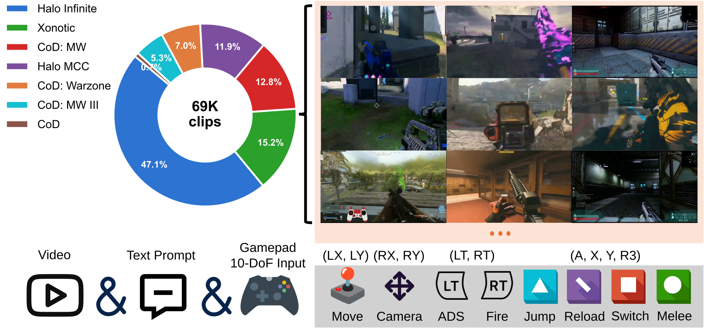

Method
SCOPE inserts a spatial action decoupling module into each DiT block. Discrete events use cross-attention to confine effects to in-scope regions; continuous controls use MLP fusion and temporal self-attention for smooth ego-motion. All output projections are zero-initialized for stable residual training.

Figure 1. SCOPE architecture with dual-pathway spatial action decoupling module.
SCOPE is trained on CrossFPS, a multi-game dataset with 69K clips from 7 FPS titles and frame-aligned 10-DoF gamepad telemetry.

Figure 2. CrossFPS: 69K clips across 7 FPS titles with per-frame 10-DoF action annotations.